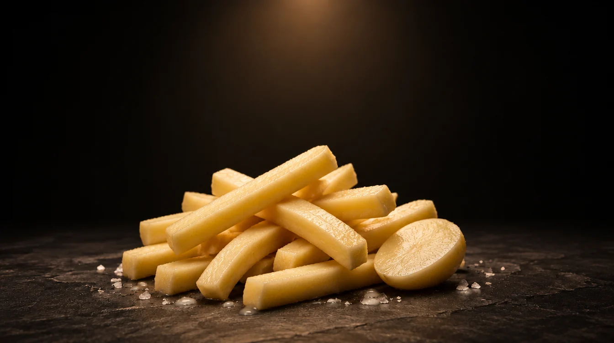

Over ons
Al sinds 1993 aan de pan.
Een cafetaria midden in de Prinsessenbuurt van Kaatsheuvel. Geen keten, geen poespas — gewoon goede friet, snacks en burgers en een vriendelijk woord aan de toonbank.
Wat gasten in reviews steeds noemen
Vier dingen die terugkomen.
Samenvatting van openbare reviews; samen goed voor een 4,4 op Google bij 232 beoordelingen (via Wanderlog).
Een vaste plek in het dorp.
Nederland is een frietland, en Brabant misschien nog wel het meest. Bijna iedereen heeft een cafetaria waar hij als kind al kwam, op vrijdagavond of na het voetballen. In Kaatsheuvel is D'n Bebbes al sinds 1993 zo'n plek.
Je hoeft hier geen tafel te reserveren. Je loopt binnen, je bestelt, en even later sta je weer buiten met iets warms in je handen.

Voorbeeldbeeld
Tot vanavond aan de toonbank.
Bestel vooraf en je bestelling staat klaar, bel even, of loop gewoon binnen aan de Van Heeswijkstraat. Dinsdag tot en met zondag vanaf 16:00.